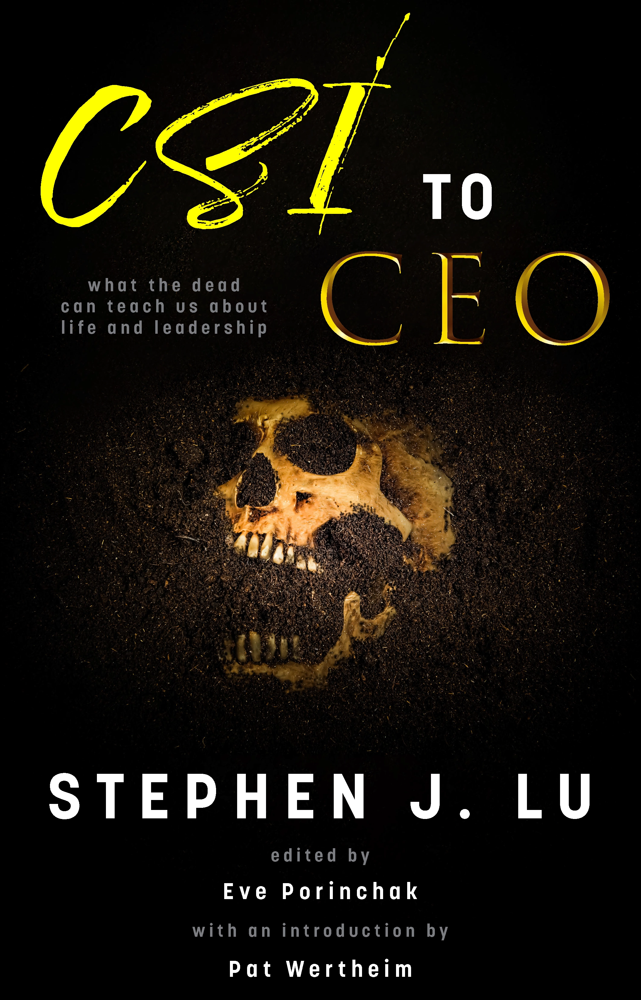
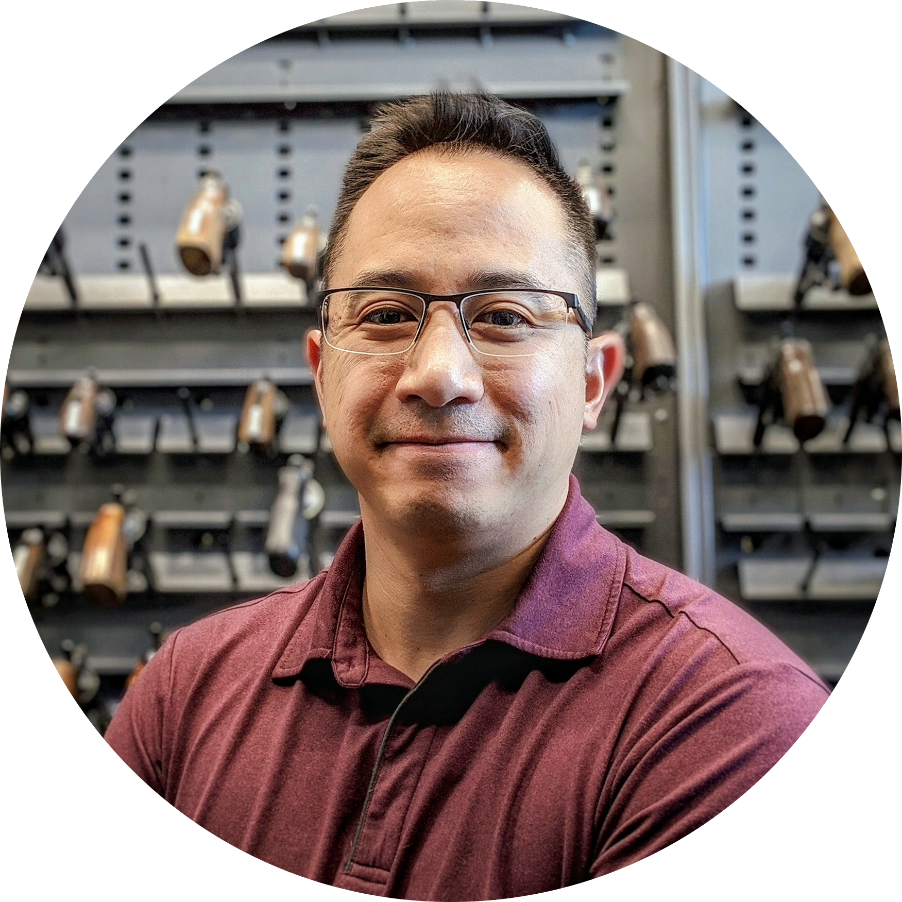
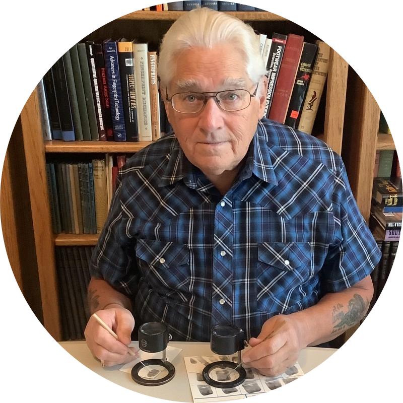

-
 Dive into an insider's perspective into the REAL CSI
Stephen Lu knew what it was like to fight for his life—literally. During the worst months of a mysterious illness, his body and mind were under siege, bringing him to the point of almost giving up. He eventually clawed his way back to health with the help of doctors, coaches, friends, and their life-saving practices.
But this wasn't the first or last battle Stephen would fight. Throughout the development of his career as a Crime Scene Investigator, he experienced several defining moments under brutal and demeaning leadership. Stephen fought to overcome the barriers that people threw at him for standing up for science and curiosity: worker abuse, harassment, retaliation, and discrimination.
Armed with a wealth of experience to draw from and his insatiable hunger for personal growth, Stephen's relentless fight to stay curious led him to a role he never expected—the CEO of his own forensic leadership development company.
With a meticulously crafted narrative, Stephen's dark humor and straightforward, no-BS attitude display themselves in one inspiring memoir that combines true crime, forensic how-to, and leadership lessons. His unique journey from the world of forensic investigation to the realm of leadership bestowed upon him a fresh perspective, enabling him to empower individuals and organizations to unlock their true potential for the public good.
Prepare to step into a world where true crime meets leadership transformation.
-
 About Stephen
"In CSI to CEO, I share my story of overcoming immense personal and professional battles. From facing a life-threatening illness to navigating toxic leadership as a forensic scientist and Crime Scene Investigator, I've encountered some dark moments. But it's also these experiences that drove me to push past barriers and fight for science and integrity.
"Blending dark humor, true crime, forensic know-how, and leadership lessons, CSI to CEO is a candid memoir about the power of resilience, curiosity, and leadership. My hope is that this story empowers readers to find strength in adversity and unlock their own leadership potential for the greater good."
Throughout his varied careers, Stephen has studied everything from mosquitoes and disease biology to bloodstain patterns, bullet trajectories, and digging up clandestine graves.
Today—through innovative, collaborative communication and technology solutions—he works to foster better leadership in the forensics industry and to support and improve the lives of people diagnosed with Amyotrophic Lateral Sclerosis (ALS).
With six years as a published research scientist and seventeen years working in forensics, Stephen has experienced and observed a wide variety of leadership styles—coercive to collaborative—noting their effects on himself, his colleagues, and organizational integrity. After retiring from forensics, Stephen went on to earn his Executive MBA with the express goal of helping his clients develop effective leadership skills and strategies.
Stephen has seventeen years of forensic experience, including Forensic Biology, Crime Scene Investigation and Reconstruction, and Firearms Analysis. He has testified as a qualified expert witness in courts in Arizona and California and in front of the U.S. District Court for the Central District of California. As an active member since 2007, he has served as the Regional Director South and Lead Webmaster for the California Association of Criminalists. In these roles, he increased public visibility by transforming the website and guiding the leadership through the transition to online training during the COVID-19 pandemic.
Before his career in forensics, Stephen worked for six years as a published research scientist. Under Dr. Michael Wells at the University of Arizona, he studied protease regulation in the Yellow Fever mosquito, Aedes aegypti. He also completed an internship at the National Institutes of Health/NIDDK, studying neutral lipid trafficking in Niemann-Pick Type C disease under Dr. E. Joan Blanchette-Mackie.
Stephen holds an Executive MBA with Honors from Quantic School of Business and Technology and a Bachelor of Science with Honors, magna cum laude, in Biochemistry and Molecular Biophysics and Molecular and Cellular Biology from the University of Arizona. Stephen is Phi Beta Kappa and a Society for Human Resource Management Certified Professional (SHRM-CP).
Stephen has intermediate fluency in French, Mandarin Chinese, and American Sign Language (ASL).
In his free time, Stephen enjoys reading and writing, web development, electronic music composition and production, and playing with Aries, a stubborn Siberian Husky.
Q&A with Stephen
- Have you
always been interested in forensics?
Not always. I became interested in science at the end of high school and worked in a research lab during college. After graduation and a considerable amount of deliberation, I realized that I had an interest in combining science with public service and criminal justice. Pursuing that interest led me to a position with the California Department of Justice’s Jan Bashinski Laboratory in the Bay Area. At that lab, I trained as a DNA Analyst and worked in the Databank Unit, which handled and submitted DNA profiles to the FBI’s Combined DNA Index System (CODIS).
I had a great desire to perform casework in Forensic Biology, so that brought me back to Arizona, where I worked as a casework DNA analyst with the Arizona Department of Public Safety, first in Phoenix, then in Tucson. During my tenure there, I also worked as a contract assessor with the National Forensic Science Technology Center. With them, I worked as part of an audit team, performing audits of DNA laboratories around the United States. With my work as an auditor, I also helped with teaching a few courses in Forensic Biology topics at several labs.
Back in college, my friends and I used to come to San Diego every Spring Break, and we even took an impromptu trip out here one weekend to see Lifehouse in concert at the House of Blues downtown. That was a wild trip, which included driving late at night down the 8 during a tumbleweed storm and staying at a motel where the shower floors were painted black. So, I have always had the pull to live in California, and I accepted a position with the San Diego County Sheriff’s Department in 2012. I first worked in the Forensic Biology Unit, but I had the fortunate opportunity to branch out and become a part of the Crime Scene Investigations Unit. With this team, I responded to numerous crime scenes to assist with death investigations. I performed trajectory analysis, bloodstain pattern analysis, and shooting and crime scene reconstruction. In 2015, I transferred to the Firearms Analysis Unit, where I performed analysis on firearms-related evidence and contributed to the ATF’s National Integrated Ballistic Information Network with their Integrated Ballistics Identification System (IBIS/NIBIN).
- What got you
interested in leadership, specifically for forensic folks?
One thread in the forensics industry that I kept seeing pop up was a lack of quality leadership and management training for forensic professionals in the United States. I have personally experienced poor leadership in all the labs I worked at, and I heard stories of poor leadership decisions and their effects all the time.
These stories crop up in the news from time to time as well. So, to help make a difference and to help leaders and aspiring leaders in forensics do the best job that they can for the public, whom we serve, I enrolled in an MBA degree program with Quantic and selected a few specializations that focused on leadership, management, and strategy.
During my studies, I founded the Forensic Leaders Training Center on the principle of improving the state of leadership in forensics with engaging and effective courses, resources, and community.
- Talk to us a
bit about the challenges and lessons you’ve learned along the way. Looking back would you say it’s
been easy or smooth in retrospect?
It has not been a smooth or straight path; I don’t believe anything worth fighting for will be a smooth road. For me, a lot of the challenges have been self-doubt, societal pressures, and wondering if I have made the right choices in life.
However, the hardest battles that I had to overcome and must overcome every day are the health issues that I am experiencing. Going through so much loss in such a short period of time has really shifted my perspective on life, and it has made me realize that I need to fight for what I value. Before these challenges, I had essentially hollowed myself out, accepting values that other people found important to them as my own. I learned the hard way that doing so is self-defeating and erodes on you as a person, especially if those values directly conflict with your own. It was a hard lesson, but I am so grateful I went through it; I am who I am today because of those lessons.
- What are some
of the strangest scenes you've responded to?
A few of these made it into the book, so I'll leave readers to find out about those.
Some others that didn't make it in include a flooded house, where the perpetrators broke open the water hose on the washer before leaving the scene. To add onto that, when we responded, San Diego was experiencing a heavy rain and hail storm. We actually had to take a break during the initial briefing because it was hailing so hard!
That investigation was a very wet and cold night.
I've met a lot of animals at scenes. We've encountered many dogs, some cats, birds, and horses. There was even a teacup pig at one investigation. It was really cute.
The ones that always hit me the hardest, though, are the infants and toddlers. I just can't believe the evil.
- How did you
go from forensics to writing a book?
Like business, leadership, and courtroom testimony, a lot of it was trial by fire!
I had no idea how to write a book, though I've always been a reader and a writer. Throughout my life, I've documented important events and situations, either through journaling or saving messages. I never imagined that I would use the writing I've kept throughout my life to write a book. It just happened.
In a way, it made writing CSI to CEO pretty easy—I had the main content, I just had to fill in some gaps and add in a bit of creativity and imagery to make it interesting.
Eve, my editor, has been invaluable help on the technical aspects of the writing and publishing industry standards. I don't think this book would exist without her help.
- Are you going
to write another book? If so, do you think you'll go into fiction?
I'm not sure yet. CSI to CEO took a lot of energy, so I'm going to continue promoting and marketing this one for a while.
But—I'm not completely shutting the door on another one sometime down the line!
I'm not really a fiction writer, so I don't think I'm going to try venturing into that realm.
- Have you
always been interested in forensics?
-
About Eve
Since earning a degree in psychology and biology from UCLA, Eve has spent much of her time in and out of jail—teaching creative writing to incarcerated teens. A former agent with Jill Corcoran Literary, Eve also attended medical school, served as a child welfare case worker, and has taught everything from Kindergarten to college courses. She speaks at conferences all over the country and teaches courses at UCLA on all things publishing. A highly collaborative developmental editor, Eve prides herself on whipping manuscripts into submission-ready shape, and has guided countless aspiring authors on their paths to publication.
Eve writes stories featuring youth she feels have been underrepresented in children’s literature, such as those born into gang life, the abandoned, and the incarcerated who—ironically—have the most fascinating tales to tell. Her critically acclaimed book, One Cut—a haunting nonfiction story with a juvenile justice bent—launched Simon & Schuster’s young adult true crime line SIMON TRUE in 2017.
Q&A with Eve
From EvePorinchak.com- Have you
always been drawn to reading and writing?
Yes and no. I was a severe reluctant reader as a kid. Like, to the point where I made stuff up when I had to write book reports because I couldn’t ever finish a whole book. I was slow reader with low comprehension and embarrassed to tell anybody. I had a family full of obsessive speed readers who devoured books. However, I did love Mad Magazine and The Family Circle comics, so that’s where I really learned to read. Strangely, I loved writing and spent much of my childhood in my room propped up against my orange vinyl toy box writing and illustrating my own hilarious books. But it wasn’t until I went to medical school that I actually learned how to “read” properly and digest and comprehend efficiently.
- You went to
medical school? Like, to become a doctor??
Yes, when I was young and silly it sounded like a good idea. Because I couldn’t read well growing up, I always felt I was dumb. I worked my butt off in high school to get into UCLA. Once I was in college, I felt really dumb because I was surrounded by valedictorians. I’m pretty sure I wanted to prove to the world (and myself) that I was actually smart enough to become anything I put my mind to. Also, my sister and I had a good friend in college who was diagnosed with a brain tumor. He was pre-med and we used to study together. I always marveled at his positive nature and drive despite going through gnarly cancer treatments all four years. I think hanging out with him and joining him in his chemo appointments gave me a hero complex. I remember thinking, “If I was his doctor, I would have cured him by now.” He died soon after we graduated. Maybe I believed that if I became a doctor, people like Pete Morey wouldn't have to die so young. I’d work harder than anybody. And I’d find a cure.
- So, why did
you quit medicine?
Turns out, curing people is much tougher than I’d expected. I was going into pediatrics, and I saw some awful stuff. Everybody told me I’d get used to it. Once I realized I didn't want to get used to it, I quit to become a first grade teacher. Also, to be honest, I love sleep too much. Medical doctors don’t sleep. It’s not healthy. Nobody makes good decisions while sleep deprived!
- How did you
get into writing professionally?
As a first grade teacher in a severely impoverished New England district, I had no budget for books in my classroom. We had a handful of easy readers and anthologies provided by the district, but they were super valuable commodities because we all wanted our own classrooms to score the highest on the state exams. Teachers got competitive, and started hoarding and hiding the few books we had. It was insane! I problem-solved by writing my own picture books and easy readers with my very own illustrations. They were dreadful. Still, my kids learned to read and I fell in love with the process of writing for children.
In 2002 I quit teaching to write full-time. I joined SCBWI (Society of Children’s Book Writers and Illustrators). From 2002 to 2015 I attended every conference, seminar, and retreat available. Turns out, I wasn’t meant to write picture books. They are concise and poetic, and I am neither. Once I switched gears to writing young adult books, everything fell into place. I’ve taught in the juvenile jails for many years, and have also worked with foster youth in various capacities. Once I began writing their stories I really found my “voice.”
- Wait, did you
say you teach in jail??
Yes, I’ve taught creative writing to incarcerated youth since 2007. Actually, in college I tutored in a juvenile prison camp and fell in love with working with that population.
- Are you ever
scared to be in jail?
Gosh, no! First, kids who are incarcerated are the most friendly, polite, well-behaved teens you’ve ever seen. They are super stoked to be out of their cells and doing something fun and productive. Second, kids who are locked up are just like you and me. They’ve got insecurities and fears and crushes and hopes and dreams. Unlike me, the vast majority of them were born into extreme poverty or criminal families or gangs. Those who weren’t generally made one stupid impulsive decision that led them to jail. You may be shocked to hear that I’ve witnessed more beauty, bravery, and humanity in jail than I have just about anywhere else in my life.
- Where do you
get your ideas for books?
I like writing about the “forgotten” youth. Kids who are locked up, or in foster care, or who crossed the border into America alone and illegally. Because I had such a safe life growing up, I was always drawn to the kids who had the opposite. I always knew that their stories could have been mine. Circumstance gave me the winning lottery ticket. When I started writing kid’s books in 2002 I was struck by the appalling lack of characters who came from marginalized populations. I’d worked with gang kids and those from the inner city for as long as I could remember. Yet, we could never find books that reflected their experiences. I started writing their stories, both fiction and nonfiction.
Back in 2005 I helped edit an anthology of true stories written by Roosevelt High School students through Dave Egger’s 826-LA program. Most were impoverished kids from Boyle Heights who had incredible stories of family struggles. In the year I spent with them I learned that many came from undocumented families who had fled their beloved countries and crossed the border out of fear for their safety. America was supposed to provide a better, safer life. Instead, they found themselves deeply involved with gangs or criminal activity just to put food on the table.
Once I started writing their stories and talking with editors about the “real” America that many don’t see, people became interested. Still, there was a perception that nobody would care to read these stories. Thank god for the WE NEED DIVERSE BOOKS movement. These kids. These forgotten, invisible, underrepresented kids need to see books about themselves. The idea that kids who are poor or kids who are marginalized don’t read is ludicrous. Finally, the Kidlit publishing world is catching up.
Funny thing is that my incarcerated kids want nothing more than to read a good book. That is the number one thing they request I smuggle in for them – books! More than gummy bears, more than photos of their families, more than giant Diddy Reese cookies from Westwood (although, I smuggle all those things in as well). They want books. As long as they give me permission to tell their stories, I will.
- How do you
think your debut book, ONE CUT, has been received?
For the most part, reviews and feedback have been very positive. The one common response I get from teens is that ONE CUT is incredibly depressing. One girl told me she wailed crying at the end and hurled the book across the room and broke a mirror. That was the best reaction I could have hoped for! I want people to be outraged. I want people to scream and throw things. Then, I’d like for them to consider how we can bring change to the juvenile justice world. All prisoners deserve to be treated with humanity. But our kids, some as young as 12, are being tried as adults, treated like animals, and locked up forever. It’s insane. I want people to get visceral reactions when they read ONE CUT. I want people to know that falling into the rabbit hole of criminal justice can happen to any teenager at any time. And it’s not okay. It needs to change.
- What’s
next?
I’ve got another nonfiction project about a young girl who was bullied to death, which is out for consideration. I’ve also got two fiction books, one middle grade adventure about foster youth and one young adult contemporary story about incarcerated kids in an innovative writing program. Both are full of humor and tragedy, but mostly humor. It’s a nice change for me.
- What do you
enjoy in your free time?
Free time? What is that?? I work full time in the children’s court recruiting and training guardians appointed to foster youth. Then I’m still writing and agenting with Jill Corcoran Literary Agency. And then I’ve also taken on developing and teaching courses on how to get published in the Kidlit world for the University of California Extension system. So….when I do get a rare day off, I love to hike, bike, watch movies, go to sports events with my friends, paint, and play poker with my UCLA buddies. When I take real vacations, I travel the world with my sister, who is also my best friend. Life is good!
- Have you
always been drawn to reading and writing?
-
 About Pat
Pat Wertheim has been impacting forensic science and the use of fingerprints in law enforcement spanning six decades. He has trained thousands of latent print examiners for hundreds of criminal justice agencies around the world on best practices in latent print comparison and ethical use of evidence.
Pat has worked on numerous high-profile cases involving erroneous identifications, latent print fabrication and fingerprint forgery. He has authored ground-breaking articles on detection of forged and fabricated latent print evidence, revealing the extent that corrupt law enforcement personnel have gone to fabricate evidence. Pat is fortunate to have investigated high profile cases such as the Harry Oakes murder in the Bahamas, the Shirley McKie erroneous identification in Scotland, the fabrication of evidence against Fred Van Der Vyver in South Africa, and forged fingerprints on an alleged Jackson Pollock canvas.
Pat enjoys being involved with the science of fingerprints at a fundamental level and has served on many boards through the decades. He is a Distinguished life-sustaining member of the International Association for Identification and the Southwestern Association of Forensic Scientists. He currently sits on the editorial board for the Journal of Forensic Identification.
He has served two decades on the global Scientific Working Group on Friction Ridge Analysis, Study and Technology (SWGFST), helping to establish guidelines for the correct practices in fingerprint use. He’s testified in numerous Daubert hearings, and holds certifications as a senior crime scene analyst, certified ten print examiner, and certified latent print examiner.
He is passionate about helping make society a safer better place by correct interpretation of fingerprint evidence, and helps keep innocent people from being convicted. He has helped exonerate falsely accused people by using fingerprint evidence to remove suspicion from innocent people. His greatest satisfaction comes from mentoring aspiring examiners and young professionals to advance their careers and further the work he has given the global fingerprint community in ethical use of latent prints.
-
Book Gallery
Best viewed on a desktop computer
Tap/hover on photo to remove caption
-
Contact Us